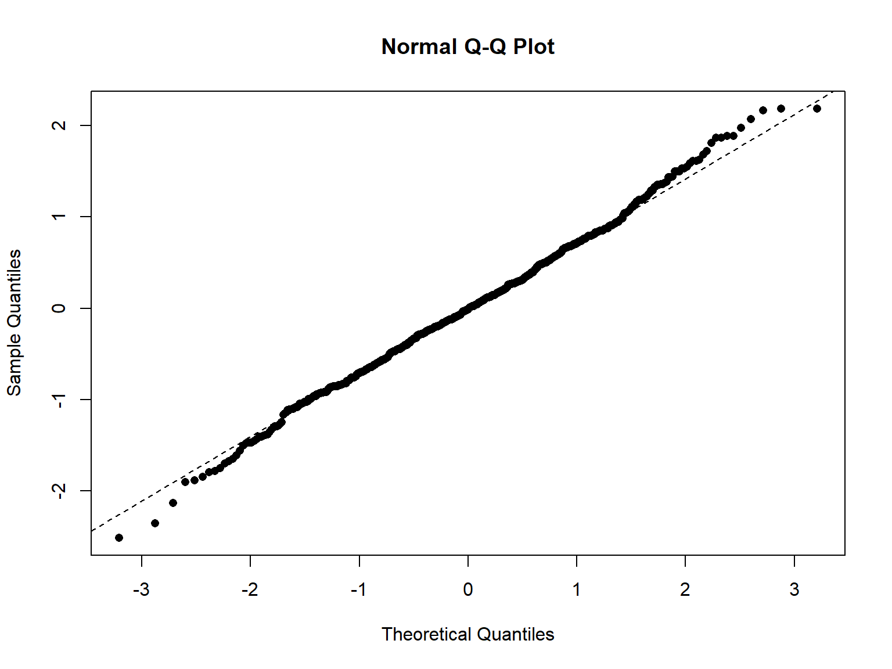
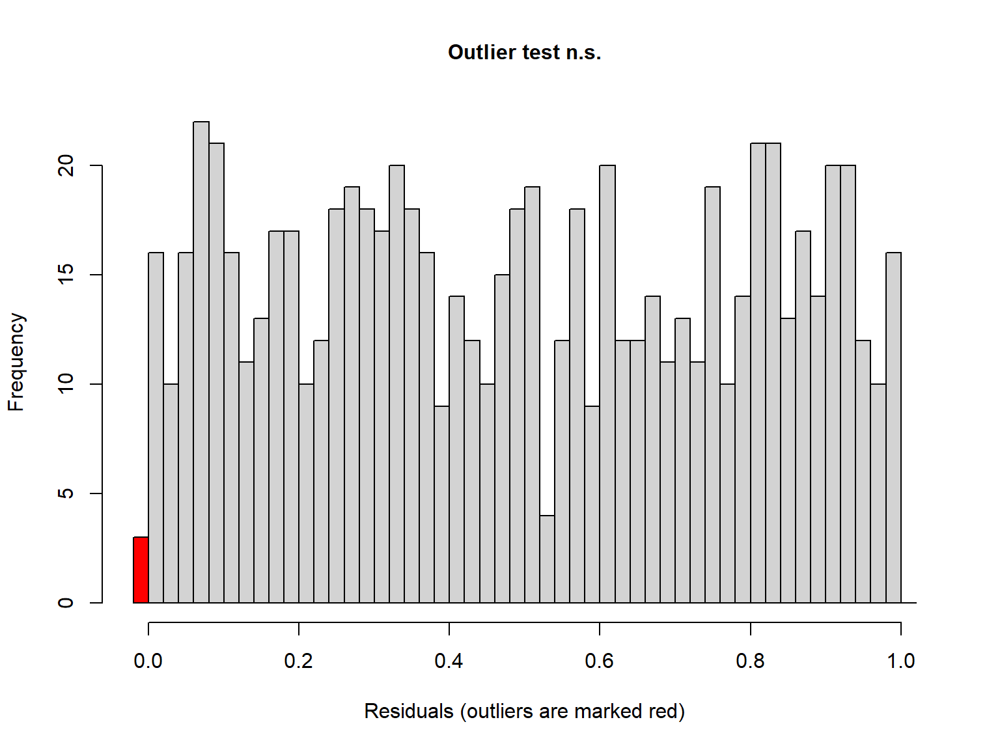
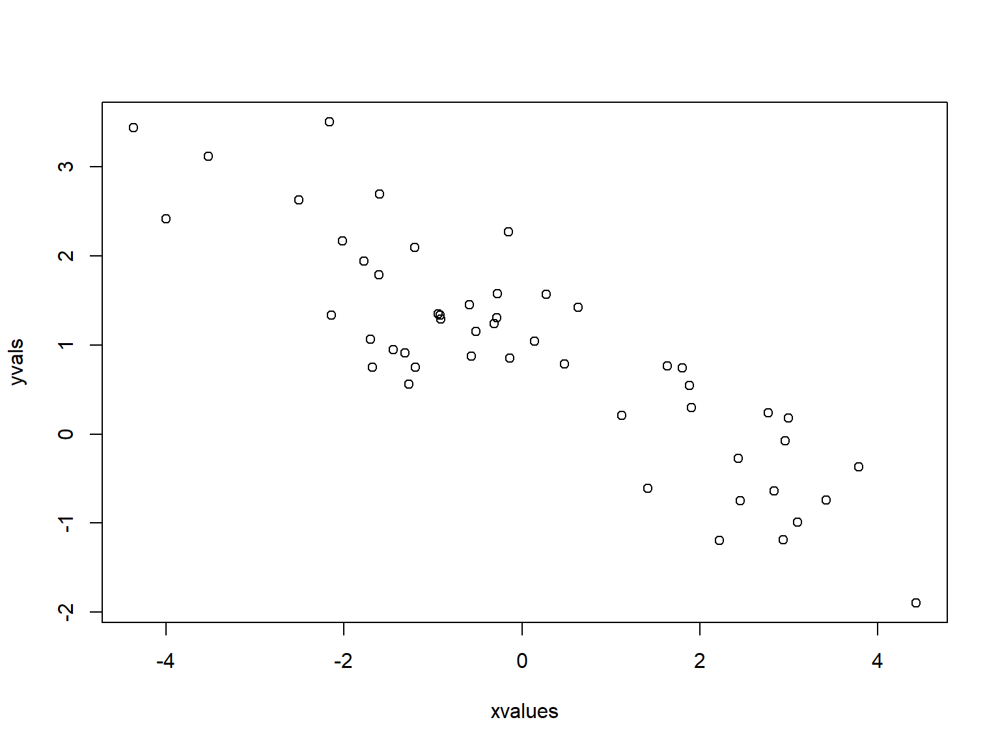
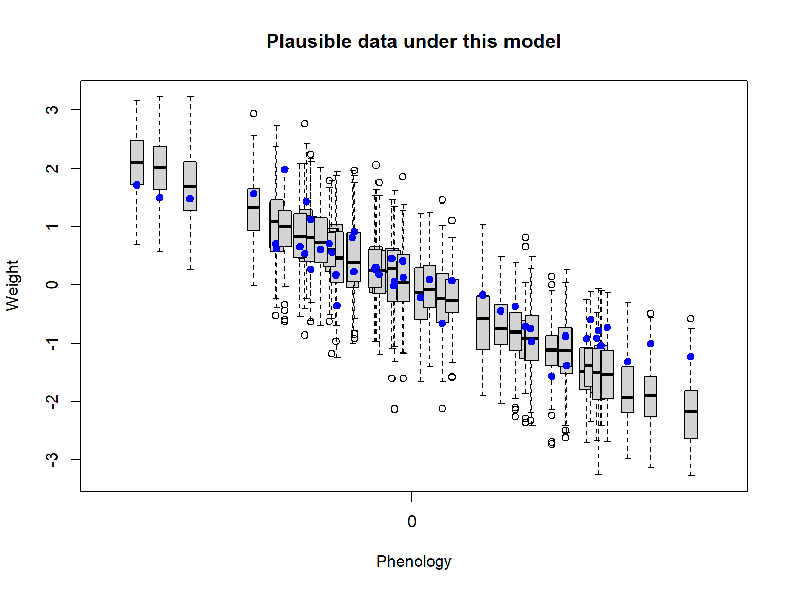
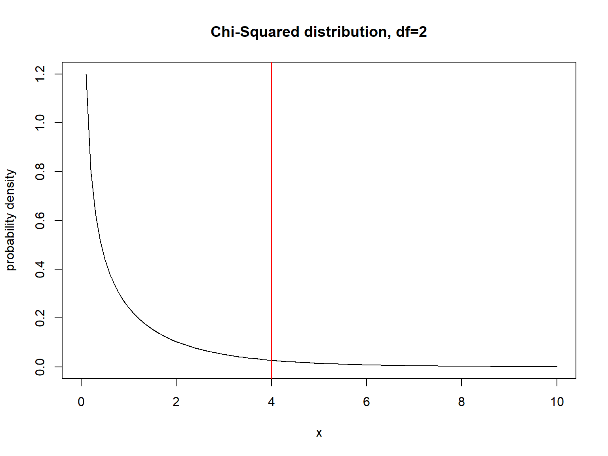

Mixed-effects models: model diagnostics and model
inference
Radchuk Viktoriia
2022-1-3
Model diagnostics
Do you remember the assumptions of the
linear model?
Assumptions of linear mixed-effects models
- independence of the data points,
- linearity of the relation between predictor(s) and
response,
- homogeneity (homoscedasticity) of residuals,
- normal distribution of residuals,
- mean independence of the
random effects of covariates (exogeneity),
- normal distribution of
random effects,
- independence and
identical distribution of random effects ACROSS random
levels.
Difficulty in assessing all assumptions
- assessing normality of random effects is difficult
because the data usually carry little information to assess the
distribution,
- most standard R packages do not feature the ready
tests (similar to using (
plot(mod) for linear
models)),
- assessing whether the distributional assumptions
are met is even more difficult for generalised linear mixed-effects
models (assume other distribution than Normal, e.g. Poisson or
Binomial),
- BUT: a rather recent R package uses
simulation-based approach to help assess the assumptions.
Recommended diagnostics
To demonstrate the diagnostics plots that are usually recommended,
let us use the data we already worked with, focusing on the relation
between phenology and temperature across several bird species.
dat <- read.csv(file = here::here('data', 'dat_phen_temp_subs.csv'))
dat_fac <- dat %>%
mutate_if(is.character, as.factor) %>%
mutate(ID = as.factor(ID))
str(dat_fac)
## 'data.frame': 750 obs. of 20 variables:
## $ ID : Factor w/ 25 levels "1","21","22",..: 1 1 1 1 1 1 1 1 1 1 ...
## $ Year : int 1953 1954 1955 1956 1957 1959 1960 1961 1962 1963 ...
## $ Study_Authors : Factor w/ 13 levels "Ahola_et_al",..: 1 1 1 1 1 1 1 1 1 1 ...
## $ Journal : Factor w/ 7 levels "Behavioural Ecology & Sociobiology",..: 4 4 4 4 4 4 4 4 4 4 ...
## $ Year_pub : int 2009 2009 2009 2009 2009 2009 2009 2009 2009 2009 ...
## $ Title : Factor w/ 8 levels "Bergmann?s rule and climate change revisited: Disentangling environmental and genetic responses in a wild bird population",..: 3 3 3 3 3 3 3 3 3 3 ...
## $ Species : Factor w/ 7 levels "Cyanistes caeruleus",..: 4 4 4 4 4 4 4 4 4 4 ...
## $ Taxon : Factor w/ 1 level "Bird": 1 1 1 1 1 1 1 1 1 1 ...
## $ Location : Factor w/ 17 levels "Askainen","Boshoek, Antwerp",..: 1 1 1 1 1 1 1 1 1 1 ...
## $ Longitude : num 21.8 21.8 21.8 21.8 21.8 ...
## $ Latitude : num 60.6 60.6 60.6 60.6 60.6 ...
## $ Country : Factor w/ 12 levels "Belgium","Canada",..: 4 4 4 4 4 4 4 4 4 4 ...
## $ Trait : Factor w/ 4 levels "ArrivalDate",..: 3 3 3 3 3 3 3 3 3 3 ...
## $ Trait_Categ_det: Factor w/ 2 levels "Arrival_Date",..: 2 2 2 2 2 2 2 2 2 2 ...
## $ Trait_Categ : Factor w/ 1 level "Phenological": 1 1 1 1 1 1 1 1 1 1 ...
## $ Trait_mean : num -1.444 -0.296 1.411 0.587 1.21 ...
## $ Trait_SE : num 0.166 0.0842 0.2379 0.2411 0.2762 ...
## $ Clim : num 3.426 1.296 -1.191 -0.631 0.757 ...
## $ det_Clim : num 1.585 -0.222 -2.323 -1.903 -0.8 ...
## $ det_Clim2 : num 2.5111 0.0491 5.3941 3.6229 0.6402 ...
Fit the model with random slope
Extract residuals using resid() function and fitted
values using fitted().
mod <- fitme(Trait_mean ~ det_Clim + (1 + det_Clim|Species), data = dat_fac, method = 'REML')
res <- resid(mod)
res[1:10]
## 1 2 3 4 5 6
## -0.24026637 -0.46470771 -0.35419635 -0.85924963 0.60233739 -0.07069611
## 7 8 9 10
## 0.41105900 -0.32960582 0.48917829 -0.15466343
fit <- fitted(mod)
fit[1:10]
## 1 2 3 4 5 6
## -1.20406814 0.16830713 1.76472364 1.44625910 0.60796203 -1.88272214
## 7 8 9 10
## -0.03267405 -0.92046294 -0.43288032 0.33740051
Prepare a dataset with the residuals
dat_diag <- cbind(dat_fac, 'Resid' = res, 'Fitted' = fit)
head(dat_diag)
## ID Year Study_Authors Journal Year_pub
## 1 1 1953 Ahola_et_al Journal of Animal Ecology 2009
## 2 1 1954 Ahola_et_al Journal of Animal Ecology 2009
## 3 1 1955 Ahola_et_al Journal of Animal Ecology 2009
## 4 1 1956 Ahola_et_al Journal of Animal Ecology 2009
## 5 1 1957 Ahola_et_al Journal of Animal Ecology 2009
## 6 1 1959 Ahola_et_al Journal of Animal Ecology 2009
## Title
## 1 Great tits lay increasingly smaller clutches than selected for: a study of climate- and density-related changes in reproductive traits
## 2 Great tits lay increasingly smaller clutches than selected for: a study of climate- and density-related changes in reproductive traits
## 3 Great tits lay increasingly smaller clutches than selected for: a study of climate- and density-related changes in reproductive traits
## 4 Great tits lay increasingly smaller clutches than selected for: a study of climate- and density-related changes in reproductive traits
## 5 Great tits lay increasingly smaller clutches than selected for: a study of climate- and density-related changes in reproductive traits
## 6 Great tits lay increasingly smaller clutches than selected for: a study of climate- and density-related changes in reproductive traits
## Species Taxon Location Longitude Latitude Country Trait
## 1 Parus major Bird Askainen 21.83119 60.57173 Finland LayingDate
## 2 Parus major Bird Askainen 21.83119 60.57173 Finland LayingDate
## 3 Parus major Bird Askainen 21.83119 60.57173 Finland LayingDate
## 4 Parus major Bird Askainen 21.83119 60.57173 Finland LayingDate
## 5 Parus major Bird Askainen 21.83119 60.57173 Finland LayingDate
## 6 Parus major Bird Askainen 21.83119 60.57173 Finland LayingDate
## Trait_Categ_det Trait_Categ Trait_mean Trait_SE Clim det_Clim
## 1 Laying_Date Phenological -1.4443345 0.1660056 3.4255952 1.5846563
## 2 Laying_Date Phenological -0.2964006 0.0842285 1.2955357 -0.2215065
## 3 Laying_Date Phenological 1.4105273 0.2378510 -1.1910119 -2.3225267
## 4 Laying_Date Phenological 0.5870095 0.2411013 -0.6306547 -1.9034002
## 5 Laying_Date Phenological 1.2102994 0.2761537 0.7568452 -0.8001298
## 6 Laying_Date Phenological -1.9534183 0.1177711 4.8272023 2.4778228
## det_Clim2 Resid Fitted
## 1 2.51113553 -0.24026637 -1.2040681
## 2 0.04906514 -0.46470771 0.1683071
## 3 5.39413023 -0.35419635 1.7647236
## 4 3.62293238 -0.85924963 1.4462591
## 5 0.64020777 0.60233739 0.6079620
## 6 6.13960571 -0.07069611 -1.8827221
Recommended diagnostics
1.1. linearity of the relation between predictor and response
ggplot(dat_diag, aes(x = Fitted, y = res)) +
geom_point() + xlab('Fitted values') +
ylab('Standardised residuals') +
geom_hline(yintercept = 0, lty = 2) + theme_bw()

Recommended diagnostics
1.2. linearity of the relation between predictor and response
ggplot(dat_diag, aes(x = det_Clim, y = res)) +
geom_point() + xlab('Standardized temperature') +
ylab('Standardised residuals') +
geom_hline(yintercept = 0, lty = 2) + theme_bw()

Recommended diagnostics
- normality of the residuals
qqnorm(res, pch = 16)
qqline(res, lty = 2, lwd =1.3)

Recommended diagnostics
3. homogeneity of residuals
We plot here a so-called Scale-location plot. Do you recall what it
shows and how to interpret it?
dat_diag$SqrtRes <- sqrt(abs(dat_diag$Resid)) ## calculating sqrt of absolute residuals for the Scale-Location plot
ggplot(dat_diag, aes(x = Fitted, y = SqrtRes)) +
geom_point() + geom_smooth(method = 'loess', se = FALSE) +
ylab(expression(sqrt(abs(resid)))) + xlab('Fitted values') +
theme_bw()

Recommended diagnostics
- normality of the random effects
randE <- ranef(mod)$`( 1 + det_Clim | Species )`
randE <- as.data.frame(randE)
qqnorm(randE$det_Clim, pch = 16)
qqline(randE$det_Clim, lwd =1.3, lty = 2)

# histogram is not always obvious as the number of levels can be low, as in our case
hist(randE$det_Clim, breaks = 5, border=NA, col = 'black')
 This example clearly demonstrates that it is not easy to verify the
assumption of normality of the random effects
This example clearly demonstrates that it is not easy to verify the
assumption of normality of the random effects
Recommended diagnostics
5.1. homogeneity of residuals among levels of random factors
ggplot(dat_diag, aes(x = Resid, y = Species)) + geom_boxplot() +
theme_bw()

Recommended diagnostics
5.2. homogeneity of residuals among levels of random factors
ggplot(dat_diag, aes(x = Fitted, y = Resid)) + geom_point() +
facet_wrap(vars(Species)) +
theme_bw() +
geom_hline(yintercept = 0, col = 'blue')

DHARMa - a package for model diagnostics
- developed by Prof. Florian Hartig from the
University of Regensburg
- stands for “Diagnostics for HierArchical Regression
Models”
- “In Hinduism, dharma signifies behaviours that are
considered to be in accord with rta, the order that makes life and
universe possible, and includes duties, rights, laws, conduct, virtues
and ‘right way of living’”
Shortly how DHARMa works
- Fit the model
- Simulate new response data using the fitted
model
- For each observation, calculate the empirical
cumulative density function (eCDF) for the simulated observations. eCDF
describes the possible values (and their probability) at the predictor
combination of the observed value, assuming the fitted model is
correct.
Shortly how DHARMa works

The residual is defined as the value of the eCDF at the value of the
observed data.
A residual of 0 means that all simulated values are larger than the
observed value, and a residual of 0.5 means half of the simulated values
are larger than the observed value.
For more info: DHARMa
Packages and models supported by DHARMa
- lm and glm
- lme4
- mgcv
- gamm4
- glmmTMB
- spaMM
- GLMMadaptive
- phyr
- brms
What DHARMa returns
Let us show it directly on the model we have fitted to the data
sim <- simulateResiduals(mod, plot = T)
 The option
The option plot = TRUE
directly produces the plot, disable it with = F.
Interpreting DHARMa output
The minimum/maximum values for the residuals are 0 and 1.
For a correctly specified model we expect:
a uniform (flat) distribution of the scaled
residuals
uniformity in y direction if we plot against any
predictor.
Important: uniform
distribution is the only difference to the classically expected normal
distribution of the residuals (because of the way the residuals are
obtained here).
Inspecting the output: QQ-plot

QQ plot is used to detect overall
deviations from the expected distribution (uniform). By default the
function plotQQunif() also adds tests of the distributional
assumption (KS test), dispersion and outliers. Note: outliers in DHARMa
are values that are outside the simulation envelope, not in terms of a
particular quantile. So, the number of the outliers will depend on the
number of simulations. If outliers in terms of a particular quantile are
desired, they can be requested with the function
outliers().
Test of distributional assumptions
testUniformity() performs
Kolmogorov-Smirnov test on whether the residuals are uniformly
distributed.
testUniformity(sim, plot = F)
##
## Asymptotic one-sample Kolmogorov-Smirnov test
##
## data: simulationOutput$scaledResiduals
## D = 0.037333, p-value = 0.2467
## alternative hypothesis: two-sided
Test of outliers
- testOutliers()
tests if the number of outliers outside of the simulation envelope is
larger or smaller than expected (uses bootstrap or can rely on binomial
test, specified with the option type=)

##
## DHARMa outlier test based on exact binomial test with approximate
## expectations
##
## data: sim
## outliers at both margin(s) = 3, observations = 750, p-value = 0.3017
## alternative hypothesis: true probability of success is not equal to 0.007968127
## 95 percent confidence interval:
## 0.000825657 0.011644828
## sample estimates:
## frequency of outliers (expected: 0.00796812749003984 )
## 0.004
Test of dispersion
-
testDispersion() provides several ways to test for over- or
underdispersion. In short: by default the simulation-based dispersion
test is used that compares the variance of observed raw residuals with
the one of the simulated residuals. A sinificant ratio >1 indicates
overdispersion, a signif. ratio < 1 - underdispersion.
testDispersion(sim, plot = F)
##
## DHARMa nonparametric dispersion test via sd of residuals fitted vs.
## simulated
##
## data: simulationOutput
## dispersion = 1.0046, p-value = 0.752
## alternative hypothesis: two.sided
Inspecting the output: Part2
A plot of the residuals against the
predicted value (or another variable). Simulation outliers are
highlighted as red stars. To detect deviations from uniformity in
y-direction, the function calculates a quantile regression that compares
the empirical 0.25, 0.5 and 0.75 quantiles in y direction (red solid
lines) with the respective theoretical quantiles (dashed black/red
lines)
Test of quantiles
testQuantiles() fits a quantile regression of residuals
vs predicted value (this is default, a chosen predictor can be
specified), and tests if this conforms to the expected quantile
testQuantiles(sim, plot = F)
##
## Test for location of quantiles via qgam
##
## data: sim
## p-value < 2.2e-16
## alternative hypothesis: both
Plot residuals vs predictor
plotResiduals(sim, form = dat_fac$det_Clim)
Test of temporal autocorrelation
We first need to extract a single study because there are multiple
species and their studies go over different time periods and somewhat
different durations (as we have seen before).
Let us get the data for the study 1 and recalculate the residuals only
for this data subset.
Temporal autocorrelation: study 1
sim_1 <- recalculateResiduals(sim, sel = dat_fac$ID == 1)
testTemporalAutocorrelation(sim_1, time = dat_fac$Year[dat_fac$ID == 1])
##
## Durbin-Watson test
##
## data: simulationOutput$scaledResiduals ~ 1
## DW = 1.997, p-value = 0.9912
## alternative hypothesis: true autocorrelation is not 0
Function to test autocorrelation per study
## [1] "1" "21" "22" "98" "101" "121" "131" "159" "164" "167" "185" "186"
## [13] "327" "333" "436" "437" "455" "459" "474" "487" "494" "495" "504" "509"
## [25] "571"
# a little function to perform the temp autocor test per study
fun_autocor <- function(simulatedObj = sim, data = dat_fac, ID = 1){
sim_subset <- recalculateResiduals(simulatedObj, sel = data$ID == ID)
testAut <- testTemporalAutocorrelation(sim_subset, time = data$Year[data$ID == ID], plot = F)
return(list(testAut, data.frame(DurbW = testAut$statistic, p = testAut$p.value, ID = ID)))
}
Check how function works
fun_autocor(sim, dat_fac, ID = 21)
## [[1]]
##
## Durbin-Watson test
##
## data: simulationOutput$scaledResiduals ~ 1
## DW = 1.511, p-value = 0.04778
## alternative hypothesis: true autocorrelation is not 0
##
##
## [[2]]
## DurbW p ID
## DW 1.510992 0.04777999 21
Test autocorrelation in all studies
hist(dat_autoc$p, breaks = 20)

dat_autoc$sign <- ifelse(dat_autoc$p < 0.05,'Yes','No')
sum(dat_autoc$sign == 'Yes')
## [1] 8
Detected issues
We detected temporal autocorrelation in 8 out of 25 studies. An
indication that it may be causing problems.
Other potential issues?
We will see how to deal with these more advanced topics in the next
lecture.
Model inference
Inference: evaluating the strength of evidence in
data for some statement about nature.
Main method: hypothesis testing. So, prior to fitting
the model (and data collection) we formulate hypotheses (usually null
and alternative one) about some phenomenon in nature.
Inference is thus about \(\beta\),
i.e. model parameters. We usually want to assess whether a specific
predictor affects our response variable.
- Could you please
formulate a hypothesis (regarding your own research or just examplary
one)?
What is ML and REML?
- ML stands for maximum likelihoood. Specifically,
maximum likelihood estimation of model parameters.
- What
are model parameters?
- ML estimation is a method that allows to estimate
values of model parameters. The parameter values are found so that they
maximise the likelihood that the model we specified produced the
observed data.
The logic behind it in veeeery simplified terms
We simulate the data using a linear model, assuming that phenology is
advancing with temperature (we look at one species only, which we
monitored during 50 years)
Our simulated data
set.seed(5)
Weight_sim <- SimulateLin(intercept = 0.1, slope = -0.4, n = 50,
var.error = 0.2)
plot(y ~ x, data = Weight_sim, pch = 19, xlab = "Temperature",
ylab = "Phenology")

Fit linear model to simulated data
mod <- lm(y ~ x, data = Weight_sim)
summary(mod)
##
## Call:
## lm(formula = y ~ x, data = Weight_sim)
##
## Residuals:
## Min 1Q Median 3Q Max
## -0.91233 -0.19415 -0.02061 0.22722 1.11235
##
## Coefficients:
## Estimate Std. Error t value Pr(>|t|)
## (Intercept) 0.09660 0.05167 1.869 0.0677 .
## x -0.37953 0.02438 -15.570 <2e-16 ***
## ---
## Signif. codes: 0 '***' 0.001 '**' 0.01 '*' 0.05 '.' 0.1 ' ' 1
##
## Residual standard error: 0.3647 on 48 degrees of freedom
## Multiple R-squared: 0.8347, Adjusted R-squared: 0.8313
## F-statistic: 242.4 on 1 and 48 DF, p-value: < 2.2e-16
Weight_sim$pred <- fitted(mod)
Plot model fit
plot(y ~ x, data = Weight_sim, pch = 19, xlab = "Temperature", ylab = "Phenology")
lines(x= Weight_sim$x, y = fitted(mod), col = "red", lwd = 2) # add the fitted line to the plot

sigma2_res <- sum(resid(mod)^2) / nrow(Weight_sim) # our variance
deviance(mod)/nrow(Weight_sim) # for lm variance is the same as the deviance
## [1] 0.1276826
Now we assume linear model and generate data under it
determ_comp <- function(xvalues, intercept, slope){
yvalues <- intercept + slope*xvalues
return(yvalues)
}
DataGener_lm <- function(xvalues,params){
y_det <- determ_comp(xvalues, params$intercept, params$slope) # get deterministic signal part
yvalues <- rnorm(length(y_det), y_det, sqrt(params$variance)) # add random nomrally distributed noise
return(yvalues)
}
Generate data under the model
xvalues <- Weight_sim$x # xvalues come from our observed data
params <- list()
params$intercept <- 1 # set model parameters by eyeballing the plot of the observed data
params$slope <- -0.5
params$variance <- 0.3
yvals <- DataGener_lm(xvalues, params)
plot(yvals ~ xvalues)

Generate plausible data under this model
PlotPossibleData <- function(xvalues, params, reps = 100){
samplesize <- length(xvalues)
res <- array(0, dim = c(samplesize,reps)) # storage array for results
for(i in 1:reps){
yvalues <- DataGener_lm(xvalues, params)
res[,i] <- yvalues
}
# boxplot of the results
boxplot(lapply(1:nrow(res), function(i) res[i,]), at = xvalues, xaxt = "n", main = "Plausible data under this model",
ylab = "Weight", xlab = "Phenology", boxwex = 0.2) ## boxwex option just makes the boxes narrower so that they are visible on x axis
cleanseq <- (seq(0, max(round(xvalues/100)), length=(max(round(xvalues/100)))+1))*100
axis(1, at = cleanseq, labels = cleanseq) # label the x axis properly
}
Plot generated plausible data
PlotPossibleData(xvalues, params, reps = 100) # run the function to visualize the range of data that could be produced under this model
# add the real data
points(xvalues, Weight_sim$y, pch = 19, cex=1, col = "blue")

Try again
Choosing a new set of parameters
params$intercept <- 0
params$slope <- -0.5
params$variance <- 0.3
PlotPossibleData(xvalues, params, reps = 100) # visualize the range of data plausible under this model
points(xvalues, Weight_sim$y, pch = 19, cex=1, col = "blue")

Probability density for one observation

## [1] 0.1709749
Model likelihood
## [1] -19.49173
log(prod(Weight_sim$density))
## [1] -Inf
sum(log(Weight_sim$density))
## [1] -1664.037
- Why are we getting -Inf
with log(prod)?
- Recall we just used eye-balled parameters, we did
not really work towards maximizing the likelihood
Restricted Maximum Likelihood
- ML results in a bias of the variance
estimates.
- I will spare you the math.
- REML applies a special matrix multiplication so
that \(\beta\) (slope and intercept) do
not have to be considered anymore. As a result, it returns an unbiased
estimate of variance.
- Thus: REML estimates of \(\beta\) are not the same as those obtained
with ML, especially if there are many covariates in the model.
REML vs ML
- ML produces unbiased estimates of the \(\beta\) and thus should be used if we focus
on the estimates of the fixed effects.
- REML produces unbiased estimates of variances and
thus should be used if we focus on estimating random structure. For
example, if we are interested in the variance among the levels of the
random factor or want to compare the models with different random
structures.
- To remember: “RE” in REML
can be thought of as “Random Effects”
Likelihood Ratio Test
Assesses the goodness of fit of two competing models using the ratio
of their likelihoods.
Likelihood ratio is calculated as follows: \[\dfrac{\mathcal {L}_r}{\mathcal {L}}\]
Where \({\mathcal {L}}\) is the maximum
likelihood of the full fitted model and \({\mathcal {L}_r}\) is the maximum
likelihood of the reduced model.
Likelihood Ratio test
We use ln() of this ratio, specifically \(-2 \times ln(\dfrac{\mathcal {L}_r}{\mathcal
{L}})\)
This metric is also known as ‘deviance’. It is approximately \(\chi^2\) distributed with r
degrees of freedom, where r is the number of parameters by
which we reduced the full model.
Chi-squared distribution
By using the fact that log-likelihood is distributed according to
\(\chi^2\) we can estimate the
statistical significance of any difference in log-likelihood between the
full and the reduced models.
Chi-squared distribution: example
A visualization of the chi-squared distribution with 1 df, the
Chi-squared for examplary two models is in red). Given the null
hypothesis is true there is a 0.0269955 percent chance to obtain a
deviance with that value. So we will reject the null hypothesis (under
\(\alpha\) of 0.05).

Checking up
- Why are we using log-Likelihood and
not Likelihood itself?
- What is model inference?
Work flow
- Formulate research question
- Formulate hypothesis
- Collect data
- Fit appropriate model
- Conduct model diagnostics
- Inference (i.e. answer research question)
- If desired, plot predictions
Literature
- Zuur AF, Ieno EN, Walker N, Saveliev AA, Smith GM
(2009) Mixed-Effects Models and Extensions in Ecology with R. New York,
Springer New York: XXII, 574 p.
- Schielzeth H, Dingemanse NJ, Nakagawa S, Westneat
DF, Allegue H, Teplitsky C, Reale D, Dochtermann NA, Garamszegi LZ,
Araya-Ajoy YG (2020) Robustness of linear mixed-effects models to
violations of distributional assumptions. Methods in Ecology and
Evolution, 11:1141–1152.
- Bolker BM, Brooks ME, Clark CJ, Geange SW, Poulsen
JR, Stevens MHH, White J-SS (2008) Generalized linear mixed models: a
practical guide for ecology and evolution. Trends in Ecology and
Evolution, 24:3.
- Grilli L and Rampichini C (2014) Specification of
random effects in multilevel models: a review. Quality and
Quality, DOI: 10.1007/s11135-014-0060-5.
- Tredennik AT, Hooker G, Ellner SP, Adler PB (2021)
A practical guide to selecting models for exploration, inference, and
prediction in ecology. Ecology, 0:e03336.